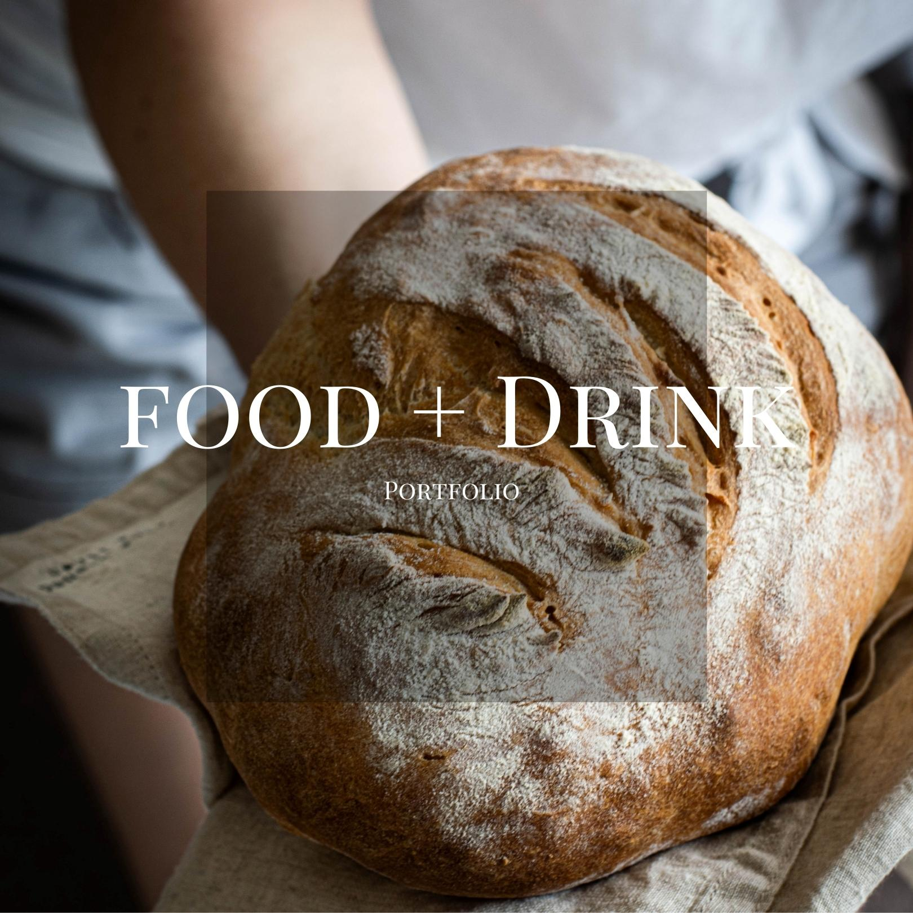
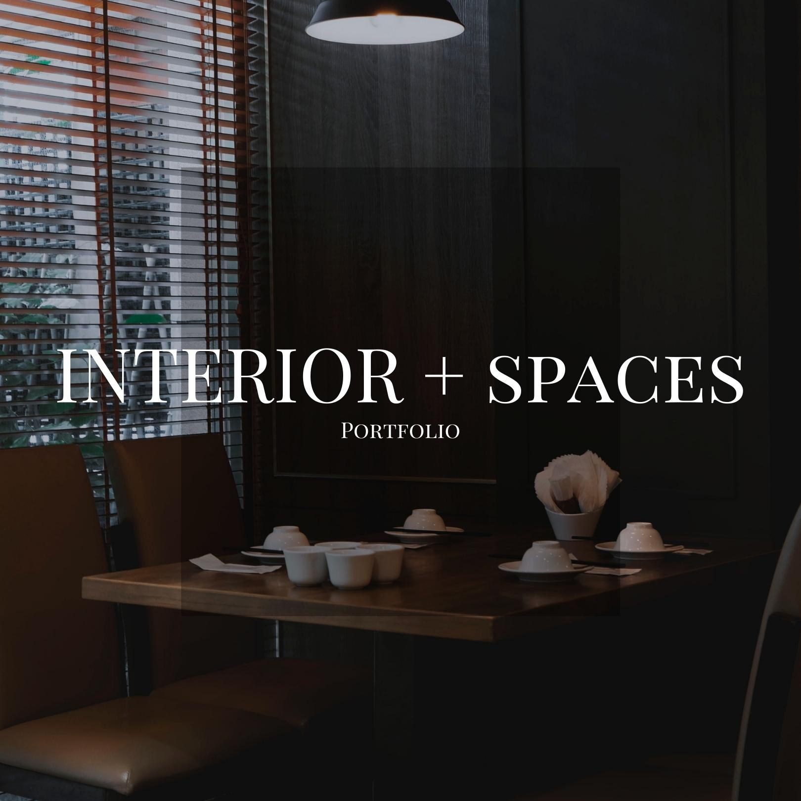
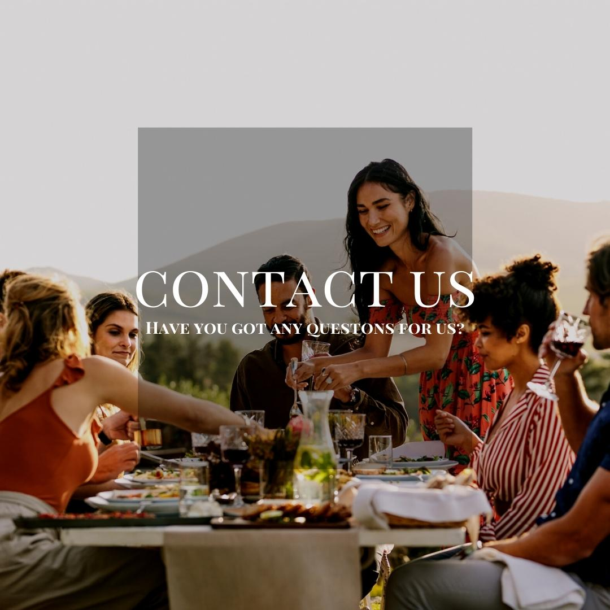
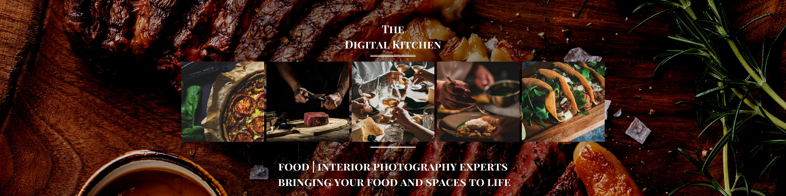

- Let us articulate your vision for your brand -

The Digital Kitchen is here to help you showcase your brand. We focus on the catering and hospitality industry to help you
tell stories through your food and spaces.
Our aim is to help you gain relevant traction through our creative eye and affinity for showcasing
the distinct aestheitc of a brand or business. Browse through our site to see our work and what we could be providing for you. The Digital Kitchen looks forward to colloborating with you!
What would you like to explore first?




